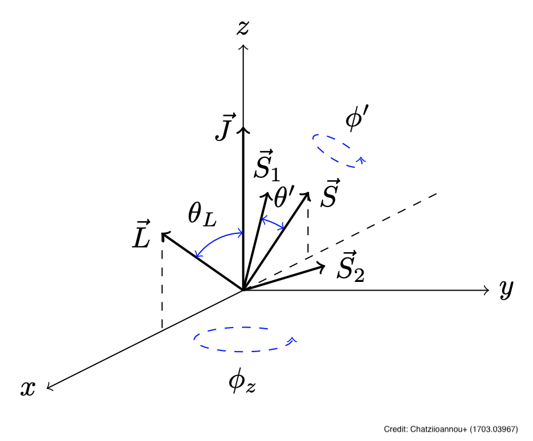
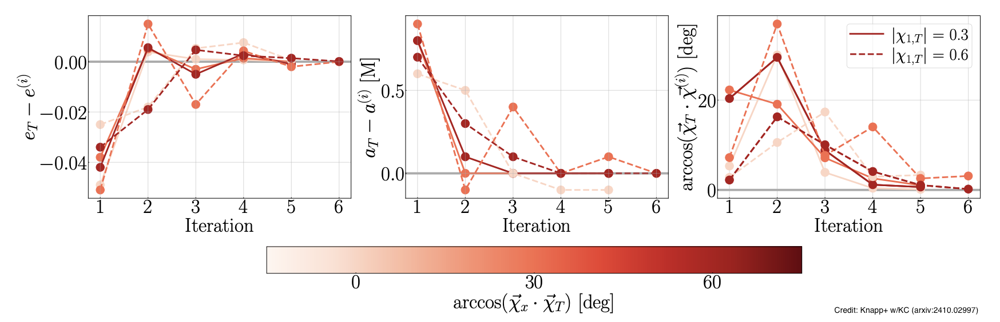
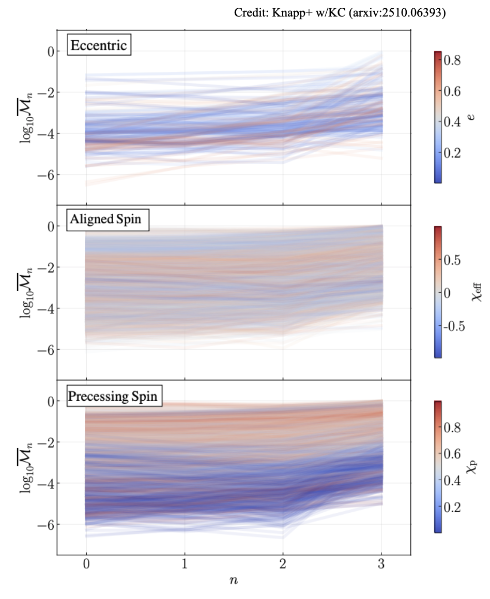
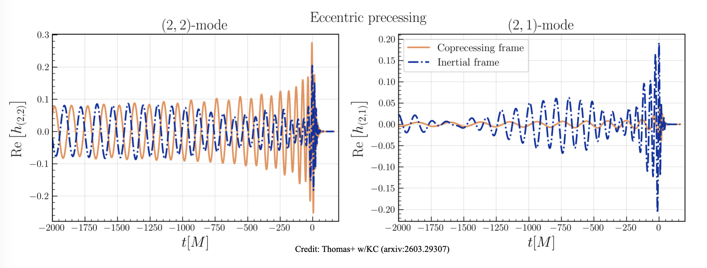

Waveform modeling and binary dynamics


Numerical relativity simulations solve Einstein's field equations step-by-step over time, producing nearly exact solutions (limited only by numerical error) for how black holes interact and what gravitational waves they emit during mergers. However, setting up these simulations is challenging. Einstein's equations are incredibly complex - they are a system of ten coupled, non-linear partial differential equations that describe how matter and energy curve spacetime. Because of this complexity, it is not straightforward to choose the right starting conditions that will result in the specific binary black hole system we want to study. Caltech graduate student Taylor Knapp led a research project that developed and tested an iterative method to solve this initial conditions problem. An iterative method means we make an educated guess, run a simulation to see how close we got to the target, then adjust the starting conditions and try again, repeating this process until we achieve the desired result. This technique allows us to create simulations with specific target parameters for the binary system. For example, we can now reliably produce simulations where the black holes have a particular orbital eccentricity, a specific semi-major axis, or spins in precisely chosen directions. This level of control is crucial for building comprehensive models of gravitational-wave sources.

Thanks to almost two decades of producing numerical relativity simulations, we now have access to catalogs with thousands of high-quality simulations of merging black holes with a wide variety of parameters. In a follow-up study, Knapp led an effort to characterize the numerical errors of these simulations and to explore trends within a simulation or across the parameter space. Some findings were reassuring, others pointed to areas of improvement. As expected, numerical errors are larger for longer simulations: the more binary evolution the code needs to solve for, the more small errors add up. But reassuringly, the final merger stage is not inherently less accurate than the inspiral, despite the former being governed by more complex and non-linear dynamics. Numerical errors also do not grow with the eccentricity of the orbit or with black hole spins aligned with the orbit. However, errors do grow noticeably for precessing spins, and our study identified the precise numerical setup choice responsible, motivating a revisit. Furthermore, errors appear random across the parameter space rather than being systematically biased in any direction, e.g., the amplitude is not systematically overestimated with larger mass asymmetry. Theoretical models that are calibrated against these simulations are not in danger of folding in such a systematic and hard-to-diagnose error. Overall, modern numerical simulations of black hole mergers are highly accurate, especially compared to current observational requirements.

The final frontier in modeling the signal emitted by black hole mergers is the most complex one: black holes in eccentric orbits and with precessing spins. Each effect on its own has been tackled before, but their combination raises unique challenges. On the road to the full eccentric and precessing model, Caltech postdoctoral scholar Lucy Thomas led a study revisiting one of the key ingredients of precessing models. When black holes precess, the direction of strongest gravitational-wave emission slowly tilts, producing a complicated signal at Earth as we observe the binary from different angles. A useful trick to simplify this signal for modeling purposes is the "coprecessing frame": rather than describe the signal in a fixed reference frame, we use a time-dependent rotation to track the dominant emission direction. In this rotating frame the intricate precessing modulations largely disappear, and the underlying wave structure is simplified. We found that the coprecessing frame continues to simplify the signal even when the binary orbit is eccentric. For example, when building fast waveform models based on numerical simulations, it requires fewer such simulations to reach the same accuracy compared to a fixed frame. The study confirms that this coprecessing, rotating trick remains a valuable starting point for future waveform models.